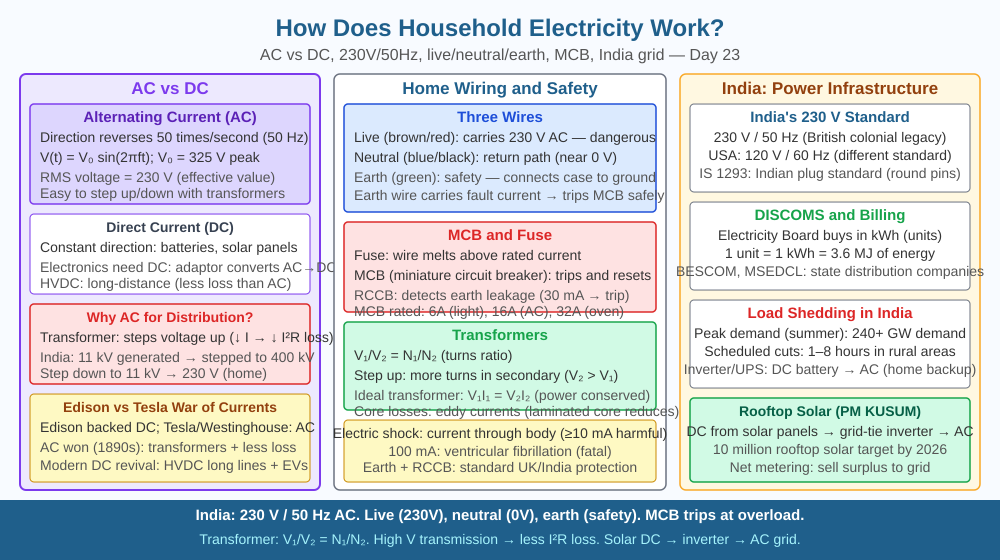

By the end of this lesson, you should be able to explain why household electricity uses alternating current, describe the roles of the live, neutral, and earth wires in an Indian plug, explain how a fuse protects a circuit, and predict what would happen to appliances if supply voltage suddenly doubled.
You plug a phone charger into a wall socket and it works. You plug a bulb in and it glows. The electricity comes from somewhere far away — sometimes hundreds of kilometres — yet it arrives at exactly 230 V, 50 Hz without you doing anything. What type of current actually flows through your home wiring? Why three pins in an Indian plug and not two? And why does flipping the wrong switch sometimes trip a breaker or blow a fuse?
Alternating current (AC) vs direct current (DC). A battery produces direct current (DC): electrons drift steadily in one direction. The power station and your home supply produce alternating current (AC): the direction of electron flow reverses repeatedly. In India, this reversal happens 50 times per second, so the frequency is 50 Hz. The voltage swings between +325 V and −325 V in a sine wave; the effective (RMS) value is 230 V, which is what appliances are rated for. AC is used for transmission because transformers — which only work with AC — can step voltage up for transmission and then back down for use.
Why AC is transmitted at high voltage. When electricity travels from a power station in, say, Singrauli to homes in Delhi — a distance of over 1000 km — some energy is inevitably lost as heat in the transmission wires. The power lost is P_loss = I²R. If you reduce the current I by stepping voltage up (using a step-up transformer at the power station), the same power (P = VI) is transmitted with far less current, reducing I²R losses dramatically. Voltage is stepped up to 400 kV or higher for long-distance transmission, then stepped down by a series of step-down transformers to 11 kV, then 415 V (for industrial areas), then finally 230 V for homes.
Inside an Indian household circuit. Three wires enter your home from the electricity board's pole transformer:
How a fuse protects the circuit. A fuse is a short piece of wire with a low melting point (commonly a tin-lead alloy). It is connected in series with the live wire. Each circuit in a home has a fuse or MCB (miniature circuit breaker) rated to a specific current — typically 5 A for lighting, 15 A for power sockets. If the current exceeds this rating (because of a short circuit or too many appliances), the fuse wire heats up by P = I²R and melts within milliseconds, breaking the circuit before wires or appliances are damaged. An MCB uses a bimetallic strip that bends under excess heat and trips a switch — it can be reset without replacement.
Why voltage must be stable at 230 V. Appliances are designed with specific resistance values for their rated voltage. A 100 W, 230 V bulb has a filament resistance of about 529 Ω. The current it draws is I = V/R = 230/529 ≈ 0.43 A. The power dissipated as heat/light is exactly 100 W. If voltage doubles to 460 V, current doubles to 0.87 A and power jumps to P = V²/R = 460²/529 ≈ 400 W — four times the rated wattage. This excess energy causes the filament to overheat and burn out within seconds, and the same excess current would overheat the wiring and insulation throughout the circuit.
Think of household wiring as a water supply system in a high-rise apartment:
AC current: instead of water flowing continuously in one direction, imagine it surging back and forth 50 times a second — the appliance uses energy from each surge regardless of direction.
The included SVG shows a schematic of the Indian household supply:

Q3 established that doubling the supply voltage would cause excess current to flow and potentially burn out components. Now extend this further: during a lightning storm, an extremely high-voltage surge can reach a home's wiring through the supply lines. A standard MCB rated at 15 A trips in about 0.1 seconds when current is 15–20 A, but a lightning surge can drive tens of thousands of amperes for microseconds. Explain why a standard fuse or MCB would fail to protect sensitive electronics (computers, TVs) from a lightning surge, and describe what a surge protector (SPD — surge protective device) would need to do differently to protect them.
What type of current is used in household electricity and why?
Correct answer: a
Why is understanding AC supply and earthing more useful than just knowing plugs have three pins?
Correct answer: b
What would happen to household appliances if supply voltage suddenly doubled?
Correct answer: b
Explain today's concept to a Class 5 student using no technical terms at all — describe the live, neutral, and earth wires using a simple water-pipe analogy. Then explain it again using the correct terms: AC, 50 Hz, 230 V RMS, live, neutral, earth, fuse, MCB. Both explanations must correctly describe what each wire does and why three wires are needed instead of two.
The reason your 230 V household supply can kill you but a 9 V battery cannot is not just about voltage — it is about the current the supply can sustain. The human body's resistance (skin to skin) is roughly 1000–10000 Ω when dry. At 230 V, that gives 23–230 mA through the body. Current above about 10 mA causes painful muscle contractions; above 50–100 mA it can cause ventricular fibrillation (the heart stops pumping). A 9 V battery through the same resistance gives at most 9 mA — below the threshold of serious harm. The household supply is dangerous not just because of the voltage, but because it has effectively unlimited current available from the grid.
Household electricity uses 230 V, 50 Hz alternating current because AC can be stepped up for efficient long-distance transmission; the live wire carries the voltage, the neutral provides the return path, the earth wire diverts fault currents, and fuses or MCBs break the circuit before excess current causes damage.